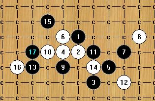
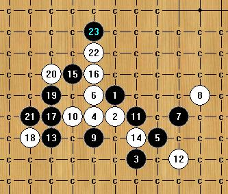
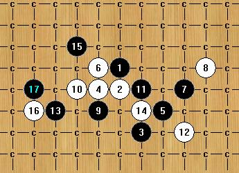

一道妖刀题----大溪月
首页
妖刀天下
#1 一道妖刀题----大溪月 作者：茗弈小刀 发表时间：2008-9-23 22:23:23
=======上图对应的爱五子棋谱代码如下，以便你拆解：========
h8h7i5g7j6g8k7l8
======================================================黑能杀吗？怎么杀?
#2 Re:一道妖刀题 作者：铁山兰 发表时间：2008-9-24 1:06:02
9手下I7是吧
#3 Re:一道妖刀题 作者：卖身打胎 发表时间：2008-9-24 2:40:07
=======上图对应的爱五子棋谱代码如下，以便你拆解：========
h8h7i5g7j6g8k7l8g6f7
======================================================只剩下这个10手没杀干净了 交换一下黑先手 防点有些多 偷下懒
#4 Re:一道妖刀题 作者：五子痴 发表时间：2008-9-24 10:19:38
呵呵 这棋满有意思的！能杀的 大家算撒
#5 Re:Re:一道妖刀题 作者：yoda 发表时间：2008-9-24 12:47:25
引用：
原文由 卖身打胎 发表于 2008-9-24 2:40:07 :
=======上图对应的爱五子棋谱代码如下，以便你拆解：========
h8h7i5g7j6g8k7l8g6f7
======================================================只剩下这个10手没杀干净了 交换一下黑先手 防点有些多 偷下懒
=======上图对应的爱五子棋谱代码如下，以便你拆解：========
h8h7i5g7j6g8k7l8g6f7i7k5e6i6f9
======================================================黑胜
#6 Re:一道妖刀题 作者：茗弈小刀 发表时间：2008-9-24 13:35:00
呵呵，最好把后边最强的变化摆出来！大家加油！黑肯定胜的。
#7 Re:一道妖刀题 作者：五子痴 发表时间：2008-9-24 17:07:07
提示一下哈 这个16算强的了！其他简单 先杀这个吧
=======上图对应的爱五子棋谱代码如下，以便你拆解：========
h8h7i5g7j6g8k7l8g6f7i7k5e6i6f9d6
======================================================
#8 Re:Re:一道妖刀题 作者：yoda 发表时间：2008-9-24 17:19:01


#9 Re:Re:一道妖刀题 作者：yoda 发表时间：2008-9-24 17:35:52

这个16两种胜法都成立
［ 茗弈小刀 于 2008-9-24 21:33:53 时奖励此帖[金币加 20 威望加1］
#10 Re:一道妖刀题 作者：nara 发表时间：2008-9-24 19:20:19
楼上的能把地毯传上来吗?
#11 Re:一道妖刀题 作者：执五子之手8 发表时间：2008-9-24 22:23:29
=======上图对应的爱五子棋谱代码如下，以便你拆解：========
h8h7i5g7j6g8k7l8j5
====================================================== 黑9后已经必胜了吧!!
#12 Re:一道妖刀题 作者：红豆 发表时间：2008-9-25 2:10:18
=======上图对应的爱五子棋谱代码如下，以便你拆解：========
h8h7i5g7j6g8k7l8g6f7i7k5e6i6f9d6e7e5i9
======================================================楼上的那是必输9
#13 Re:一道妖刀题 作者：茗弈小刀 发表时间：2008-9-25 11:28:47
呵呵 11楼的那样速败。这个8本来就是骗黑石的。
#14 Re:一道妖刀题 作者：高星 发表时间：2008-9-26 9:46:16
7在J5直接杀
#15 Re:一道妖刀题 作者：高星 发表时间：2008-9-26 10:23:22
当我没说
#16 Re:一道妖刀题 作者：冷面孤煞 发表时间：2008-9-26 12:07:09
呵呵，溪月刀，终结了
#17 Re:一道妖刀题 作者：雅典娜 发表时间：2008-9-26 13:36:12
哦,深秋了,地凉了,用上地毯了!师伯的这个13确实下的好!米想过还有这样解禁呢!(吨悟中),做杀感觉下面这个17好一点,上下各一套杀法,只能防一处,白也只能投了!
#18 Re:一道妖刀题 作者：茗弈小刀 发表时间：2008-9-26 15:19:13
14楼的朋友7在J5直接败 8=F9活三即可。
#19 Re:一道妖刀题 作者：茗弈小刀 发表时间：2008-9-26 15:21:38
这个刀也只有一打逆刃老师终结了吧，2打还没听说。
#20 Re:一道妖刀题 作者：笑雨辰 发表时间：2008-10-10 7:17:36
8换个方向怎么杀啊
#21 Re:一道妖刀题 作者：茗弈小刀 发表时间：2008-10-10 14:08:17
8换个方向是正招，后边复杂。
#22 Re:一道妖刀题 作者：茗弈如梦 发表时间：2008-10-13 17:37:24
8手反向黑能杀吗?大家给点意见
#23 Re:一道妖刀题 作者：轻雨飞扬 发表时间：2008-10-23 10:40:19
6换个方向黑早就OVER了，还杀什么？